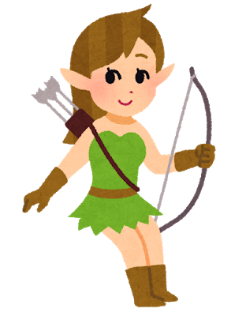
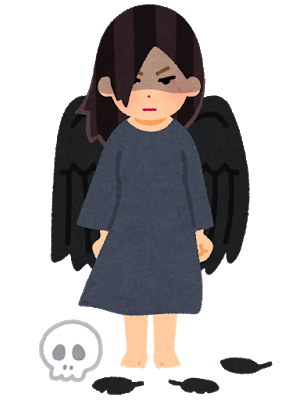
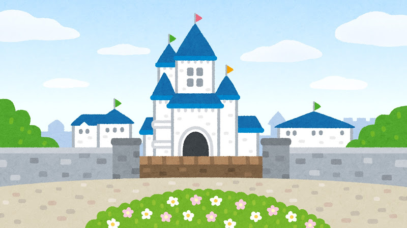
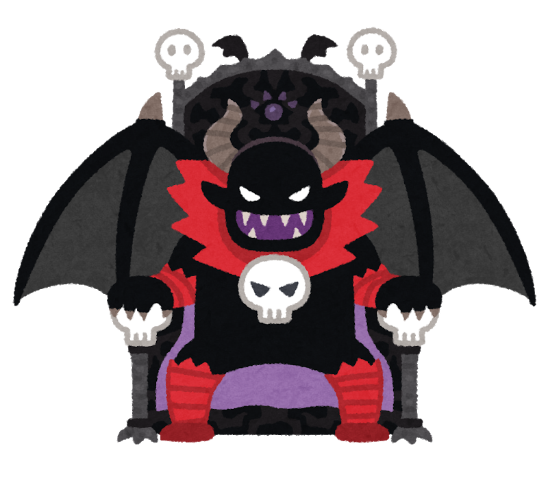

おはなし
あらすじ
主人公・ぱいんは果物王国で暮らすパイナップルの妖精。ある日突然、果物王国が魔王・ドリアンによって乗っ取られてしまう。憤ったぱいんは、王国を取り戻すことを決意する。 頭脳明晰なあぼかど、心優しいぴーち、戦闘狂のぱぱいやとの出会い、エネミーとの戦い、そして成長。
ぱいんの冒険が、今始まる。
第1話「ぱいんちゃん」

主人公・ぱいんはどこにでもいる平凡な果物の妖精。ある日いつものように友達と遊んでいると、突如空に黒い雲が立ち込める。不思議に思っていると、周りの妖精たちが次々と倒れ出した！ 命からがら逃げ出したぱいんは、急いで魔法学校に避難する。そこにいたグァパ先生から、衝撃の事実を耳にする。
第2話「あぼかど」

魔法学校で得た装備品を着用し、ドリアンのガスが無効になったぱいん。ぱいんが果物王国を救うために再び外に出るも、突如エネミーに襲われてしまう。間一髪のところで何者かに助けられる。その妖精の名はあぼかど。彼女も王国を取り戻すべく、冒険をしていたらしい。
第3話「ぴーち」
新しい仲間・アボカドと旅を続けるぱいん。草原の中を進んでいくと、何者かが道端でうずくまっているのを見つける。ぴーちと名乗るその妖精は、何かを知っているようで……。
第4話「ぱぱいや」
晴れてぴーちという強力な仲間を得たぱいん。道を進んでいると、突如ぱぱいやと名乗る妖精に襲われる。あまりの強さに太刀打ちすることができないぱいんたち。ぱぱいやは、「自分を倒すまではここを通さない」と言い放ち……。
第5話「とっくん」
ドリアン魔王を倒すには、まだまだ力が足りないと悟るぱいんたち。そこで強化訓練を行うことを思いつく。早速特訓を始めるぱいんたち。順調に戦闘能力は伸び始めるも、まだ何か足りないことに気づく。ぱいんたちにはなくて、ぱぱいやにあるものとは……。
第6話「けっとう」
道場にて強くなったぱいんたちは、ぱぱいやに決闘を挑みに行く。果たしてぱぱいやを倒すことはできるのか？
第7話「としょかん」
あぼかどの提案で、魔王ドリアンを倒す手がかりを得るために図書館へ向かうぱいんたち。それぞれ手分けして資料を探していく中、あぼかどがある書籍を見つける。そこに記された衝撃の内容に、一同は愕然とする。
第8話「なかま」

仲間の誰かが裏切っているらしいという密告がぱいんのもとに届く。誰かが裏切っているかもしれないと疑心暗鬼になるぱいんたち。そんな時、超強力なエネミーが現れた！ 仲間たちを信用し切れない状況で、ぱいんたちはエネミーに打ち勝つことができるのか。
第9話「らいち」

ついにドリアン魔王が龍城する城に辿り着いたぱいんたち。しかし、そんなぱいんたちの目の前に現れたのは、かつて果物王国の王子だったライチ王子だった。どうやらライチ王子は魔王ドリアンに操られているらしい。ライチ王子の呪いを解くために、ぱいんたちは奮起する。
第10話「おしろ」

ぴーちの魔法により、呪いがとけたライチ王子。彼はぱいんたちに現在の城の中の状況や、魔王ドリアンについて説明する。ライチ王子の情報をもとに作戦を立てたパインたちは、城の中を進んでいく。そしてとうとう魔王ドリアンの目の前に姿を現すが……。
第11話「どりあん」

ドリアンの妖精・どりあんは、その醜悪さから他の妖精からいじめを受けていた。憎悪に狂ったどりあんは果物王国を乗っ取ることを考えるようになる。
第12話「けつい」
ぱいんは意識を取り戻す。魔王ドリアンから特殊な攻撃を受けたせいで、眠っている間に夢の中で魔王ドリアンの過去を知る。真実を知ったぱいんは、すべての妖精を救うため、果物王国を取り戻すため、ある決心をする。そして決着をつけるため、仲間とともに魔王ドリアンの元へ向かう。
第13話「たたかい」
再び魔王ドリアンの前に現れるぱいんたち。最後の決戦が始まる。